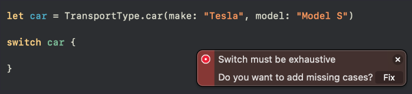

Урок 13. Перечисления
24 Января 2023

Загрузить материалы к уроку.
Перечисление, это тип данных, который определяет набор констант, значения которых являются альтернативами друг другу.
Все типы данных пишутся с большой буквы, и вы уже знакомы с базовыми типами, такими как String, Int, Bool и так далее, так вот перечисление является типом данных, который мы сами назвали, и сами создали.
Давайте посмотрим на синтаксис:
После ключевого слова enum мы прописываем имя перечисления, оно должно быть обязательно с большой буквы, так как это тип данных. Имя должно отражать суть своего содержания. В фигурных скобках мы определяем кейсы, это набор каких то значений.
Например у нас стоит задача хранить все стороны горизонта, север, юг, запад и восток:
Мы определили перечисление с именем Direction, а в блоке перечислили необходимые кейсы с маленькой буквы после ключевого слова case
Кейсы должны быть уникальными. По умолчанию, если не задать ни какого значения для кейса, то оно соответствует названию самого кейса. При этом сами кейсы являются константами и изменять их значения нельзя.

Кейсы обычно пишут в столбик, но можно писать и в строчку, при этом сильно увлекаться не стоит
Если у вас кейсов много, то лучше не делать длинные строки, а отдать предпочтение столбикам, так более наглядно и более привычно.
Если перечисление является типом данных, так же как String, Int и так далее, в таком случае мы можем создать свойство с этим типом:
Мы создали свойство с типом Direction, но никак его не инициализировали.
Какое значение мы ему должны присвоить?!
Значения типа String определяются кавычками, типа Int целым числом, логические значения двумя состояниями либо true либо false и так далее, у каждого типа есть свой вид значений.
Перечисление инициализируется одним из своих кейсов:
То есть теперь мы создали свойство, которое содержит в себе один кейс перечисления, и если мы его выведем на консоль, то мы увидим значение east:
Выше у нас есть пометка, что если не задать кейсу ни какого значения, то оно будет соответствовать своему кейсу, поэтому мы видим такое значение на консоли.
Что бы Объявить - по сути создать константу (в нашем случае с типом перечисления). Тот момент когда мы пишем let nameProperty: Тип перечисления ✍объявить перечисление необходимо обязательно прописать тип данных.
Есть еще один способ объявления свойства с типом перечисления:
Мы сразу обращаемся к типу Direction ставим точку и выбираем нужный кейс.
В дальнейшем при изменении значений достаточно просто присвоить конкретный кейс из перечисления без обращения к самому типу:
Обратите внимание, что свойство мы сделали переменной, что бы мы могли его изменять.
Хорошо, с оформлением перечисления мы определились, давайте теперь разбираться, где же мы их можем использовать.
Предположим что нам нужно сообщить пользователю куда он направляется, в зависимости от того что показывает компас. Перечисление отлично работает с условной конструкцией switch, поэтому давайте используем ее, и пройдемся по каждому нашему шагу:
После ключевого слова switch мы определяем значение, которое будем сопоставлять, в нашем случае это свойство myDirection, которое является типом Direction:
Свойство myDirection содержит значение .south, это последнее чем мы его пере определили. Далее идут кейсы с которыми мы это значение будем сопоставлять:
Когда компилятор натыкается на нужный ему кейс, остальные он не будет проверять.
Обратите внимание что в данном случае в конструкции  ✍switch не будет дефолтной ветки, а все потому что перебирая перечисления у вас не будет случайных значений, только те, которые содержит наш новый тип Direction.
✍switch не будет дефолтной ветки, а все потому что перебирая перечисления у вас не будет случайных значений, только те, которые содержит наш новый тип Direction.
На самом деле компилятор не даст вам продолжить работу, если у вас не хватает какого либо кейса:
И здесь есть два решения. Либо прописать не достающие кейсы, либо определить дефолтную ветку:
В таком случае комиплятор не будет ругаться. То есть в случае востока и запада мы получим сообщение из дефолтной ветки. На самом деле switch и перечисления, они как будто созданы друг для друга, потому что switch перебирает списки значений, а перечисления содержат эти списки
Когда вы сопоставляете перечисление при помощи конструкции switch, компилятор помогает заполнить все необходимы кейсы. Достаточно прописать основной блок:
Компилятор предложит перечислить кейсы за вас, просто нажмите кнопку Fix.
Исходные значения
Бывают случаи когда в коде или даже в интерфейсе необходимо использовать значение кейсов перечисления.
Как вы уже знаете, каждый кейс по умолчанию имеет значение, которое соответсвует названию кейса, но не всегда значение кейсов должны соответствовать названию. Давайте сперва посмотрим, на примере, как определить эти исходные значения:
Перед вами перечисление размеров одежды. После двоеточия мы определяем тип исходного значения: в нашем случае это тип String, далее мы можем присваивать кейсам значения этого типа.
Исходное значение должно быть уникальным, то есть мы не сможем два раза присвоить значение “S” или любое другое.
И теперь мы можем брать значение этих кейсов и использовать их там где они нам понадобятся
Для того что бы получить доступ к исходным значением кейсов перечисления, нам нужно обратиться к свойству rawValue этого кейса.
Давайте мы сейчас создадим переменную size:
И выведем на консоль исходное значение этого кейса:
Таким образом на консоли мы увидим значение “S”. Свойство size является кейсом small, соответственно исходных значений будет соответствующим.
Если вам для некоторых кейсов не нужно значение, то вы можете задать их не для всех:
Но это не значит что у двух последних кейсов нет значений, давайте в этом убедимся:
на консоли мы сперва увидим “S” а затем “large”. В данном случае исходное значение будет соответствовать названию кейса, то есть если вы не присвоили значение явно, то значение будет равно названию самого кейса
Давайте посмотрим еще один пример с исходными значениями, только на этот раз с типом Int
Как видите значения моего перечисления является типом Int, и первым трем кейсам присвоено начальное значение 1, 2 и 3. Если в качестве исходных значений используются целые числа, неявное значение для каждого кейса будет на единицу больше, чем в предыдущем кейсе, то есть дальше счет продолжится:
то есть справа значение кейса thuraday будет 4, у friday - 5 и так далее. Если мы немного изменим расположение значений, то отсчет будет начинаться от этой отправной точки.
Например:
monday имеет значение 1, отсюда следует, что tuesday будет равно 2, далее wednesday равно 6, а это значит что thursday будет равна 7 и так далее.
Если первый кейс не имеет заданного значения, то его значение будет равно 0. А дальше по порядку. При этом нельзя нарушить порядок, например задавать значение 1 последнему кейсу.
Еще один момент, который нужно осветить в данном уроке. Перечисление это тип данных, а это значит что мы можем создать массив этого типа, например типа Day:
Мы обязаны прописать тип данных, это массив перечислений Day, ну а внутри самого массива определяем все необходимые кейсы, можно только те, которые здесь нужны. И теперь давайте попробуем из этого массива сделать обычный массив целых чисел.
Как нам это сделать?
У каждого значения в массиве есть исходный параметр, и мы можем перебрать массив с перечислениями, и добавлять в новый числовой массив только исходные значения этих кейсов:
Перебираем при помощи цикла for массив days, берем каждый элемент и добавляем в новый массив integers исходное значение кейса, при помощи свойства rawValue. В результате мы получим массив integers, наполненный целыми числами:
Ассоциативные параметры
Ассоциативные параметры или по другому связанные значения перечисления – это дополнительные значения, которые можно связать с каждым из кейсов перечисления. Они объявляются в скобках после имени каждого члена перечисления.
Например:
В этом примере, каждый кейс перечисления TransportType имеет свои собственные ассоциативные параметры. Например кейс car имеет 2 ассоциативных параметра make и model типа String, а кейс bike имеет один ассоциативный параметр brand типа String, walking, в свою очередь, не имеет ни каких параметров.
Так же как и в кортежах, параметры можно не называть, но в таком случае будет сложно разобраться, какой параметр за что отвечает:
поэтому названия параметров лучше использовать, так код будет более понятным и открытым
Когда мы будем создавать свойство с типом перечисления, то мы увидим следующее:
Сперва тип, затем точка, и сам кейс, вы не сможете использовать кейс без скобок, это как раз те параметры, которые мы определили в перечислении
Давайте передадим какие нибудь значения в каждый из параметров и создадим еще два свойства под каждый кейс
Хорошо. Теперь у нас есть три константы с типом TransportType, но как же нам добраться до ассоциативных параметров, и например отобразить их на консоли. В этом нам поможет конструкция switch:
Не переживайте если данный код вам кажется сложным, это действительно так. Его нужно разложить на шаги. Давайте попробуем это сделать.
Пишем switch, далее сопоставляемое свойство, в нашем случае это свойство car. Доверимся компилятору и нажимаем на кнопку Fix:
Смотрите как интересно у нас компилятор добавил кейсы, мы видим наши параметры, которые есть у кейса car и остальных, но после двоеточия мы так же видим объявление новой константы:

Эти константы let make и let model будут иметь в себе значения, которые мы передали в параметры.
Таким образом мы можем взять значения этих свойств, и отобразить их в принт:
Мы можем опускать параметры, и оставить только новые свойства:

Если все связанные значения для кейсов перечисления извлекаются как константы или переменные, то для краткости вы можете разместить одиночное let или var перед именем кейса:

Все те же выводы и действия будут и с остальными кейсами:
В данном случае, сработает второй кейс .bike, в параметре которого мы получаем значение “Specialized” и передаем его в принт.
Ассоциативные параметры, не работают с исходными значениями.